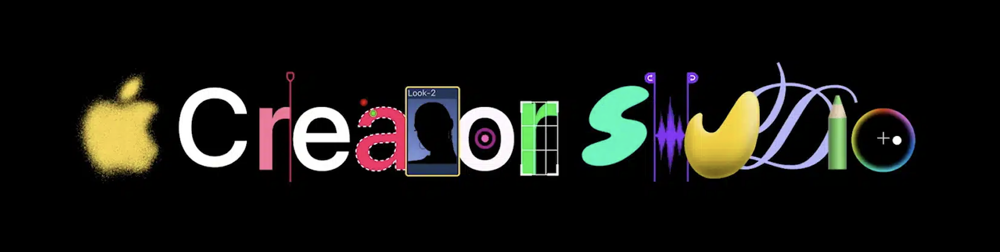
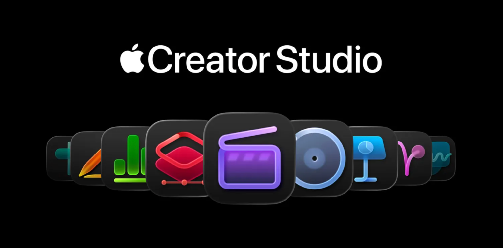
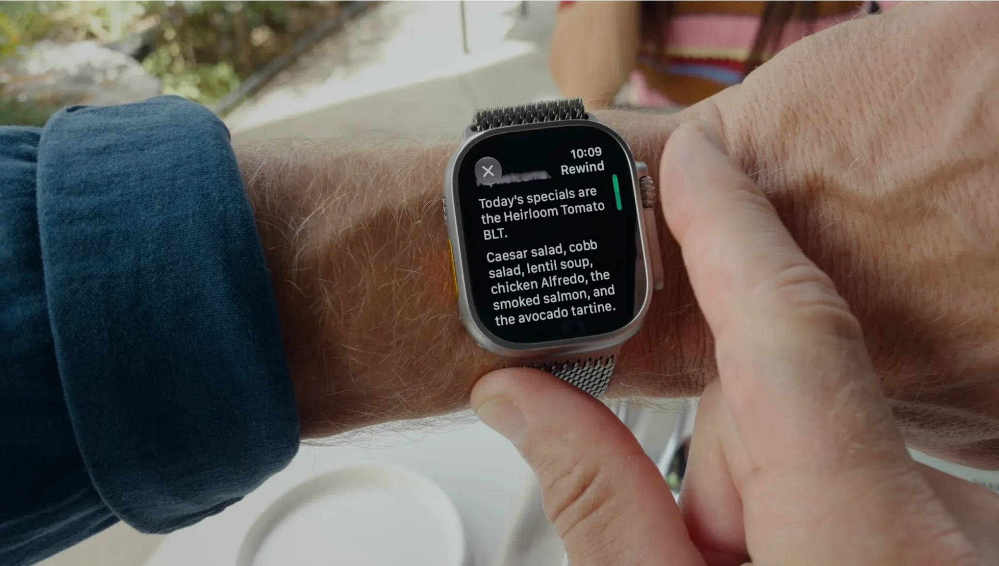

Apple is launching a new Creator Studio subscription bundle that offers access to six creative apps as well as premium content in iWork apps, the company announced on Tuesday.
The bundle costs $12.99 per month or $129 per year and includes access to Final Cut Pro, Logic Pro, and Pixelmator Pro on Mac and iPad, as well as Motion, Compressor, and MainStage on Mac. It also includes premium content for Keynote, Pages, and Numbers. Later, the bundle will include Freeform for iPhone, iPad, and Mac. College students and educators can subscribe for $2.99 per month or $29.99 per year.
Apple Creator Studio will be available beginning January 28. All new subscribers will get a one-month free trial.
As part of Tuesday's announcement, Apple revealed that these creative apps are launching new features.
Final Cut Pro on Mac and iPad is getting Transcript Search to find soundbites, Visual Search to find exact moments by describing them, and Beat Detection. Final Cut Pro for iPad is getting Montage Maker to quickly start edits and Auto Crop to reframe content.
There are also new features coming to Logic Pro, such as Synth Player, Chord ID, a new sound library, natural language search, and more.
Apple Creator Studio also brings access to MainStage, which turns Macs into an instrument, voice processor, or guitar rig.
Pixelmator Pro, a company Apple bought in 2024, is also coming to iPad for the first time, bringing its editing tools to more creators. It includes full Apple Pencil support alongside fast image editing.
Apple Creator Studio also provides access to Motion, a motion graphics tool for creating 2D and 3D effects. It also includes Compressor, which works with Final Cut Pro and Motion to customize output settings for distribution.
“Apple Creator Studio is a great value that enables creators of all types to pursue their craft and grow their skills by providing easy access to the most powerful and intuitive tools for video editing, music making, creative imaging, and visual productivity — all leveled up with advanced intelligent tools to augment and accelerate workflows,” said Eddy Cue, Apple's senior vice president of Internet Software and Services, in a press release.
In Pages, Numbers, and Keynote, a Creator Studio subscription unlocks a new “Content Hub” where users can find high-quality photos, graphics, and illustrations. Plus, there are new premium templates and themes in Keynote, Pages, and Numbers.
Apple Creator Studio gives users access to beta features in Keynote, including tools to generate presentation drafts from text outlines, create presenter notes from existing slides, and quickly clean up layouts and object placement. In Numbers, subscribers can generate formulas and automatically fill tables using pattern recognition with Magic Fill.
The tech giant notes that Final Cut Pro, Logic Pro, Pixelmator Pro, Motion, Compressor, and MainStage will continue to be available as one-time purchases on the Mac App Store, while free versions of Numbers, Pages, Keynote, and Freeform will remain available.
Hardware
Read Article: Apple’s new CEO is reviving a Steve Jobs strategy from 25 years ago
Apps
Read Article: With Apple’s new Creator Studio Pro, AI is a tool to aid creation, not replace it
Artificial Intelligence
Read Article: Apple Watch’s new AI features are normalizing the idea that technology is always listening